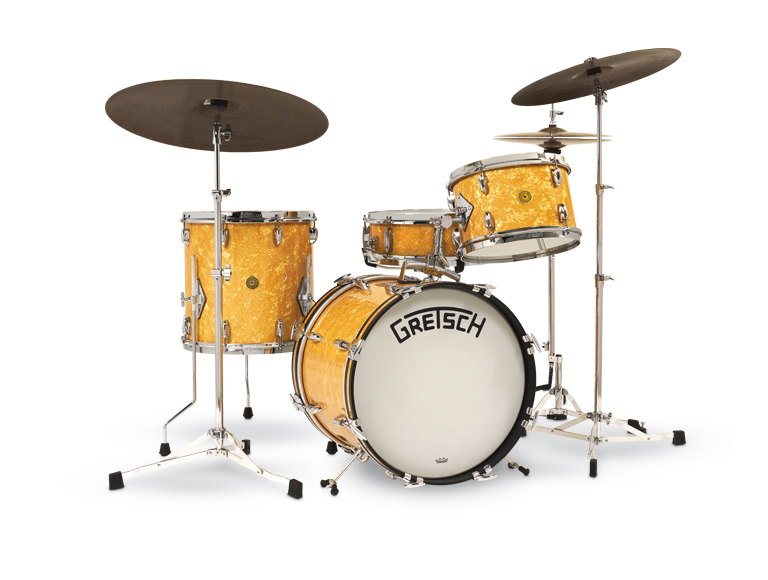
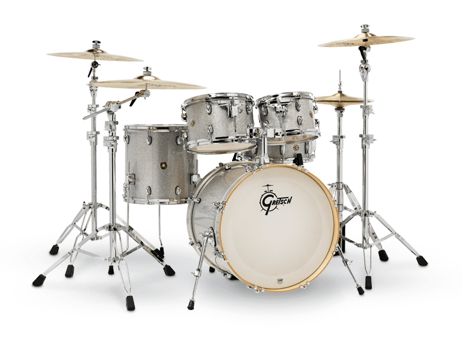
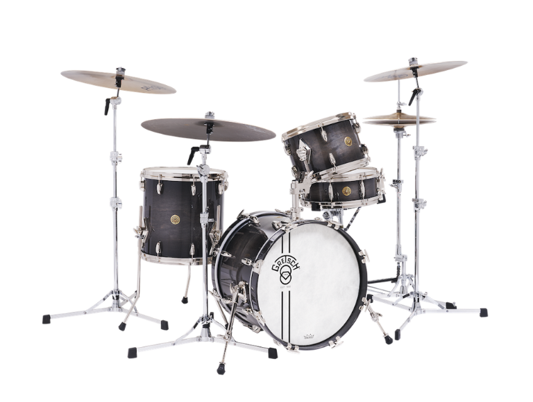

Broadkaster
Desde la década de 1920 hasta la de 1950, la batería insignia de Gretsch fue la legendaria Serie
Broadkaster. Esta presentaba un casco delgado de tres capas y producía lo que sería conocido como "Ese Gran
Sonido Gretsch". Hoy, en la fábrica de tambores Gretsch en Ridgeland, Carolina del Sur, EE. UU., con la
ayuda de técnicas avanzadas de fabricación de tambores, el Broadkaster ha regresado, trayendo consigo toda
la brillantez sonora de su homónimo.
Los cascos Broadkaster están hechos con una fórmula de
arce/álamo/arce de América del Norte. Cada casco incluye una junta de empalme interior que proporciona una
mayor integridad estructural a los cascos delgados y musicales. Al igual que todos los tambores Gretsch
hechos en EE. UU., los interiores de los cascos están acabados con el clásico sellador plateado Gretsch. El
casco está acabado a mano con el exclusivo borde de rodamiento de radio inverso, que permite un mayor
contacto superficial entre el borde de rodamiento y el parche del tambor. El resultado es un tono
increíblemente profundo y cálido.

Catalina Maple
From its sleek, innovative hardware designs and legendary Gretsch-formula shell, Catalina Maple is a
favorite among players that want a terrific sounding Gretsch drum set with ergonomically satisfying playing
experience and a fresh, contemporary look.
Catalina Maple's mounting hardware includes a round “gas
cap” bass drum mount plate and an ultra-low profile GTS mounting system. Gretsch T-Wing screws and bolts are
included on all fittings for drummer-friendly feel and rubber isolated die-cast bass drum claws help keep
bass drum hoops looking new.
The 7-ply Gretsch-formula maple shell has 30-degree bearing edges and
natural shell interiors. Bass drums include telescopic bass drum spurs and matching maple wood bass drum
hoops. Toms and snare drums feature 2.5mm triple flanged hoops. All drums are fitted with Remo® drum heads.

Edición Aniversario
In 1883, Friedrich Gretsch opened his small music shop in Brooklyn, N.Y., making drums, banjos, and
tambourines. No one expected his business on Middleton Street to become one of the most respected drum
companies in the world. Now 140 years later, Gretsch Drums are among the most iconic in the history of
music.
To celebrate our 140th anniversary, Gretsch is proud to present the Limited Edition Gretsch
140th Anniversary drum kit. Each one of these kits is painstakingly constructed to honor the rich Gretsch
legacy and offer drummers a collectible piece of Gretsch history that admirers will remember for years to
come.
The 140th limited edition kit features a 6 ply maple/poplar/gum hybrid shell finished in Ebony
Stardust gloss lacquer. Nickel-plated hardware completes this one-of-a-kind kit and adds to its visual
beauty. Each kit includes a set of custom-designed drum bags and a certificate of authenticity signed by
Fred Gretsch and the factory artisans who built them.